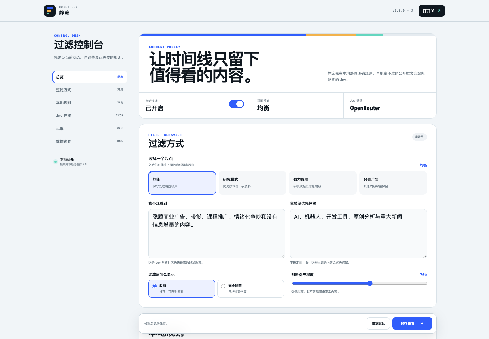
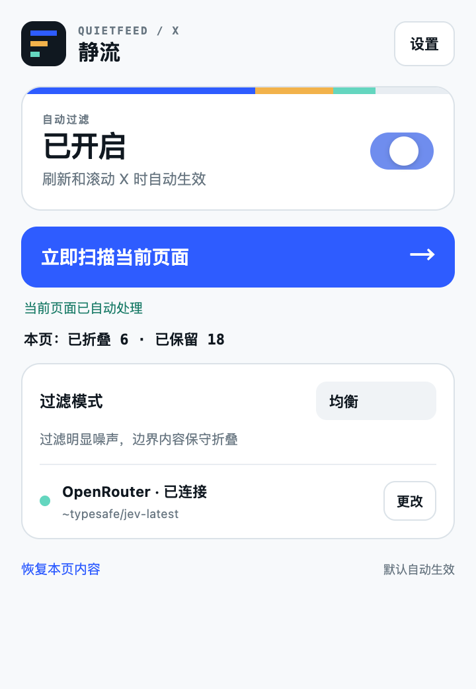
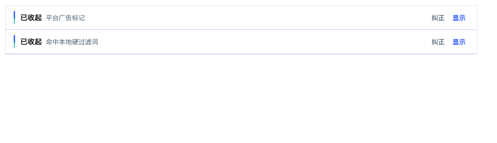

广告标签、关键词和作者规则不经过 API。
JINGLIU · AI FEED FILTER
把噪声收起来，
把注意力还给自己。
静流按你的规则过滤信息流。当前从 X 开始：广告和关键词在本地处理，拿不准的内容再交给你自己的 Jev。
v0.5.0 · 约 37 KB · MIT 开源 · X 首发，更多平台在路上
LIVE FILTER自动过滤已开启


支持 TypeSafe、OpenRouter 与自定义兼容接口。
内容默认只收起，不删除，随时可以查看或纠正。
NO JINGLIU SERVER
没有中转服务器，
你的内容不经过我们。
只读取浏览器已经载入的公开推文。
本地规则→
先在用户电脑上完成广告、关键词和作者判断。
仅不确定内容→
浏览器直接访问用户选择的服务商或自定义接口。
官网只负责页面与安装包下载。
不开账号、不托管 Key、不代理 Jev 请求。X 是首个适配器，后续将支持 Reddit、YouTube、LinkedIn 等平台。
QUIET BY DESIGN
过滤发生了，
但不打断阅读。
静流把不需要的内容压缩成一条轻量提示。滚动时自动生效，也能随时查看原文和纠正判断。

INSTALL THE BETA
三分钟装好。
当前是开发者测试版。Chrome 不允许普通网站在 macOS 和 Windows 上直接静默安装未上架扩展，因此需要先下载 ZIP，再通过开发者模式加载。
查看 Chrome 官方分发说明 ↗- 1下载并解压
下载测试包，双击 ZIP 得到
jingliu-v0.5.0文件夹。 - 2打开扩展管理
在 Chrome 地址栏输入
chrome://extensions，开启“开发者模式”。 - 3加载文件夹
点击“加载已解压的扩展程序”，选择包含
manifest.json的文件夹。 - 4刷新 X
打开或刷新 X 页面，静流会默认自动运行。
正式公开发布建议同步提交 Chrome Web Store；审核通过后，官网按钮就能改为“一键添加到 Chrome”。
DATA BOUNDARY
边界写清楚，
才能放心使用。
当前 X 页面已经载入的公开推文文字、作者与平台标签。
私信、密码、Cookie、表单输入和未打开的历史内容。
仅把需要语义判断的内容发给用户主动配置的 Jev 服务。
规则、API Key、数量统计和不含原文的纠正记录。
YOUR FEED, YOUR RULES